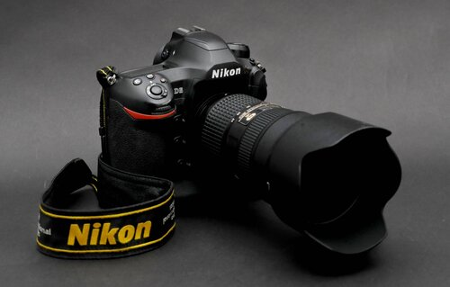

Photography Frequently Asked Questions
What is the purpose of photography?

The purpose of photography can vary depending on what the photographer is trying to achieve. For example, documentary and news photographers capture images for the purpose of providing detailed account of actual events, while hobbyist photographers aim to capture life moments with their families and friends.
What are the types of photography?
There are many different types of photography, such as landscape, macro, wildlife, portrait, documentary, fashion, travel, and event photography.
What do you need for photography?
To start taking pictures, all you need is a camera, which can be anything from a basic smartphone to an advanced DSLR or a mirrorless camera. However, photography equipment is not all that important – light, subject, emotion, and composition are all critical elements of a successful photograph.
What is the most common type of photography?
There are several photography genres that are very popular today. These include portrait, landscape, architecture, fashion, food, sports, wildlife, macro, street, event, and documentary photography.
What equipment do I need as a beginner photographer?
If you are just starting out in photography, all you need is a camera that you are comfortable with. The rest of photography equipment is going to be based on your needs. For example, if you want to do landscape photography, you will need a few different lenses, a tripod, and filters. For portrait photography, you will need to invest in a good portrait lens and potentially some lighting equipment.
What is the oldest photograph?
The oldest photograph, “View from the Window at Le Gras,” was captured by Joseph Nicéphore Niépce in 1826 or 1827.
Who took the first selfie?
The first photographic portrait ever taken was a self-portrait, or a “selfie.” It was captured in 1839 by Robert Cornelius, an amateur chemist and photography enthusiast from Philadelphia.
What is a genre in photography?
A photography “genre” is a type of photography, such as landscape photography, portrait photography, wildlife photography, etc.
How can I learn photography?

You can learn photography from many books and online resources. A lot of information related to photography can be obtained for free in the forms of articles and videos. This article is a part of photography basics series, which is provided by Photography Life for free to everyone.
What makes a great photo?
A great photograph should have good light, subject, and composition – the three elements that matter the most in photography. The photographer should have a strong vision, then express it in the most effective way possible.
What are the three basic camera settings?

The three basic camera settings are: aperture, shutter speed and ISO.
What is the best type of photography?

Every photography genre has its own appeal. Some people like some genres of photography more than others.